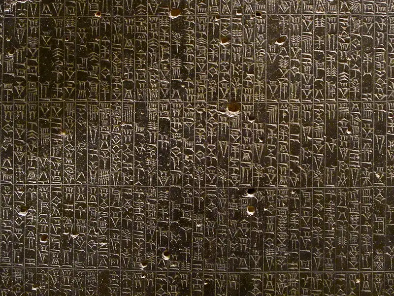
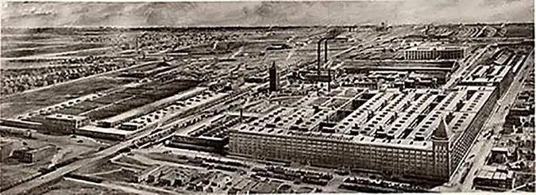
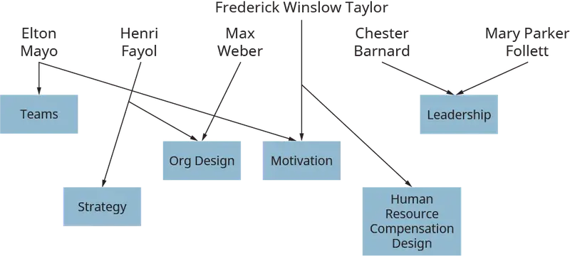

Chapter 3: The History of Management¶
Introduction¶
Learning Outcomes
After reading this chapter, you should be able to answer these questions:
- Describe management in the ancient world.
- How did the Italian Renaissance affect the progression of management theory?
- How did the Industrial Revolution affect the progression of management theory?
- How did Frederick Winslow Taylor influence management theory, and how did efficiency in management affect current management theory?
- How do bureaucratic and administrative management complement scientific management?
- How did Elton Mayo influence management theory, and how did the human relations movement affect current management theory?
- How did contingency and systems management transform management thought?
Exploring Managerial Careers: Michael Porter: Harvard Professor and Management Consultant, The Monitor Group
Michael Porter is the Bishop William Lawrence University Professor at Harvard Business School and one of the foremost scholars and consultants in business strategy. Dubbed the first “Lord of Strategy,” he is one of the most influential management thinkers of all time. Porter’s primary contribution is in the field of competition, specifically the question of why some companies profit while others do not. Porter first became interested in competition due to his enthusiasm competing in youth sports (baseball, football, and basketball).
Porter was born in 1947 and graduated from Princeton in 1969 with a degree in aerospace and mechanical engineering. He went on to receive his MBA from Harvard Business School in 1971 and his PhD in business economics from Harvard University in 1973. His book Competitive Strategy: Techniques for Analyzing Industries and Competitors (published in 1980) was deemed the ninth most influential work of the 20th century by the Fellows of the Academy of Management. Porter, writing during a period of great economic competition between the United States and Japan, was able to gain a wide and vast audience for his work.
In his 1979 Harvard Business Review article “How Competitive Forces Shape Strategy,” Porter presented his game management idea that five forces help determine the level of profitability. The five forces are competition in the industry, potential of new entrants into the industry, power of suppliers, power of customers, and threat of substitute products. An unattractive industry is one in which the five forces align themselves to produce a purely competitive industry. In this type of industry, normal profit levels are the highest a firm can expect, which means that the firm can cover its costs and make the owner a profit but cannot make excess profits. Once a firm identifies the five forces in its industry, it can choose between one of three generic strategies for success focus, differentiation, or cost leadership. Depending on where a firm is positioned within the market, the marketplace will determine what strategy it can take. This “five forces, three strategies” framework explains how McDonald’s, Morton’s Steakhouse, Subway, Wendy’s, and TGIF can all be in the same industry and still be profitable. They offer different types of products to different types of customers. These products compete on price, differentiation, focus, or a combination of these. In addition to the five forces model, Porter developed the value-chain model, which describes the unique activities that a corporation performs to make its products valuable to its customers. Porter has also contributed to health-care management, environmental regulation, international competition, and industry-level profits.
Porter’s five forces framework is intuitive and has provided managers with an approach to develop actual strategies. His ideas became popular because business leaders wanted to know how their companies could compete. Prior to Porter, management scholars stressed the idiosyncratic nature of business, stressing how each situation faced by each business was different. Other scholars offered business strategy models, but they were not as useful or practical as Porter’s. Through his use of industrial-organizational economics and his training in the case method, Porter bridged the gap between theoretical frameworks and the reality of the competitive business world and became one of the most important thinkers on business in the world.
Sources: Bedeian, Arthur G and Wren, Daniel A. (Winter 2001). "Most Influential Management Books of the 20th Century" (PDF). Organizational Dynamics. 29 (3): 221–225; Kiechel, Walter (2010). The Lords of Strategy: The Secret Intellectual History of the New Corporate World. Harvard Business Review Press; Magretta, Joan (2011). Understanding Michael Porter: The Essential Guide to Competition and Strategy. Harvard Business Review Press; and Mathews, J.(2013-02-01). The Competitive Advantage of Michael Porter. In The Oxford Handbook of Management Theorists: Oxford University Press.
While you may think that management is a relatively new field, it actually has its roots in the ancient world. In fact, whenever and wherever there has been commerce, there has been management and those thinking about how to do it better. For example, the Seven Wonders of the Ancient World, including the Colossus of Rhodes, the Hanging Gardens of Babylon, and the Great Pyramid, could only have been constructed through the work of a great many people. The size and complexity of these structures suggest that there must have been people (managers) who coordinated the labor and resources needed to execute the construction plans. Similarly, the Romans and the ancient Chinese could not have managed their vast empires without management, nor could the Phoenicians and the Greeks have dominated oceangoing trade without management.
Because management has been around for a while, it makes sense that the study of management is old. This idea is supported by the many managerial insights we can find in political, diplomatic, and military history and in philosophy, poetry, economics, and literature. Anyone familiar with Shakespeare’s King Lear would recognize the present-day management problem of succession planning! Modern managers have been influenced by the works of Chinese military strategist and philosopher Sun Tzu, Roman general and politician Julius Caesar, and even Genghis Kahn, Mongolian conqueror and ruler of what became the largest land empire in all of history. Mark Zuckerberg of Facebook is a modern admirer of the Caesars and has said that he bases some of his management style on his classical education.
Despite its ancient roots, modern management is less than 150 years old. In fact, a comparison of management before and after the Industrial Revolution shows that the former is only a shadowy comparison to the latter. Prior to the Industrial Revolution, work was performed, with exceptions, mostly in home and on farms by forced labor (slaves or indentured servants) or family members, and the output they produced was often for employers’, local, or family consumption. Over the centuries, economics and morality shifted, and laborers could choose where and for whom to work. These changes, in turn, would bring about many changes in how labor and other resources were employed in production.
The two developments that transformed management were the revolutions in how and where goods were sold and the Industrial Revolution. The events combined led to the selling of a wider variety of goods to a wider variety of customers in more distant locations. These events also led to the establishment of vast companies. Competition required the development of economies of scale (i.e., increased production lowering costs) and required coordination and specialization in the use of resources. The combination of coordination and specialization problems encouraged the development of management study as a distinct field.
In this chapter, we trace the evaluation of management from its origins in the ancient world to its form as a modern profession. Understanding how management came to be helps us to understand its principles in a richer, more thorough context and to understand how each concept we discuss is based on evidence produced by a wide range of scholars over many years in the fields of engineering, economics, psychology, sociology, and anthropology.
3.1 The Early Origins of Management¶
- Describe management in the ancient world.
Table 3.1 traces the development of management thought from the ancient world until the 19th century’s Industrial Revolution.
Sumer, located in what is today southern Iraq and the first urban-based civilization, contained the genesis of management. Sumer had a flourishing merchant culture in which goods such as grains, livestock, perfumes, and pottery were sold to customers. Rather than bartering (using one good or service, not money, to pay for another good or service), the ancient Sumerians used ancient clay coins to pay. The sizes and shapes of coins represented different amounts of currency and signaled the types of goods for which they could be exchanged.
What made this level of trade and economic activity possible? The introduction of writing made it possible for merchants to keep track of various trades. And the development of a basic form of coins allowed for increased trade because a person wanting to obtain a good or service no longer had to find another person who wanted exactly the good or service he produced. Coordinating the activities of those who provided goods and those who wanted to purchase them often required coordination, one of the main functions of a manager.
Table 3.1 (Attribution: Copyright Rice University, OpenStax, under CC-BY 4.0 license)
| Early Contributor | Outcome |
|---|---|
| Sumerians | Writing and trade |
| Hammurabi | Written commands and controls |
| Nebuchadnezzar | Incentives |
| Ancient Egyptians | Division of labor, coordination and span of control |
| Sun Tzu | Division of labor, communication and coordination |
| Han dynasty (206 BC–220 AD) | Development of bureaucracy |
| Ancient Greeks | Division of labor |
| Romans | Standardization |
| Italians | Accounting, corporations, multinational corporations |
| John Florio | Management to English language |
| Source: Adapted from George (1972) and Wren & Bedeian (2009) | |
Two additional contributions to the early development of management came from the Middle East. The idea of written laws and commands comes from the Babylonian king Hammurabi (1810 BC–1750 BC). The Code of Hammurabi was a listing of 282 laws that regulated a wide variety of behaviors, including business dealings, personal behavior, interpersonal relations, and punishments. Law 104 was one of the first instances of accounting and of the need for formal rules for managers and owners. The code also set wages for doctors, bricklayers, stonemasons, boatmen, herdsmen, and other labors. The code did not, however, include the concept of incentive wages because it set wages at a fixed amount. The idea of incentives would come from another, much later, Babylonian king, Nebuchadnezzar (605 BC–c. 562 BC), who gave incentives to cloth weavers for production. Weavers were paid in food, and the more cloth they produced, the more food they were given.

The ancient Egyptians made great strides in the building of the great pyramids. The ancient Egyptians were exceptional builders of canals, irrigation projects, and the pyramids, royal tombs whose size and complexity exceeded what the Greeks and Romans were able to build in later centuries. Although we are still uncertain about exactly how the pyramids were constructed, we have some idea that the process required a great number and wide range of slave laborers to construct them. Each laborer would have a different task. Some of the laborers were stonecutters; others were required to push and pull gigantic blocks of stone; still others were required to grease the stones to reduce friction. In this process, we see the management principals of division of labor, coordination, and specialization. These groups of workers were supervised by one individual. In figuring out how best to handle the huge numbers of workers engaged in pyramid building, the ancient Egyptians also pioneered the concept of span of control, that is, the number of workers that a manager controls directly. Anticipating research on this issue in the far, far distant future, Egyptians found the ideal number of workers per supervisor to be ten. In addition, there were various overseers, who had the responsibility to compel workers to produce.
In Asia, the Chinese began to develop the idea of bureaucracy. Bureaucracy has roots in the early dynasties but only became fully developed during the Han dynasty (206 BC–220 AD). The idea was to train scholars in Confucian teachings and use those teachings to make decisions. Unlike modern bureaucracies, this system was not formal but relied upon the discretion of the scholars themselves. Another important development was the idea of meritocracy because selection for and then promotion within a bureaucracy was based on a test of Confucian teaching.
The Greeks (800 BC–400 BC) and Romans (500 BC–476 AD) added a number of important steps in the development of management. Although neither empire was commercially oriented, both Greeks and the Romans undertook a wide range of industrial projects, such as roads and aqueducts, and established various guilds and societies that encouraged trade. The Greeks continued to develop the idea of division of labor based on Plato’s recognition of human diversity. The great Greek philosopher Socrates stressed the development of managerial skills such as creating an atmosphere of information sharing and analysis. The Romans’ contribution to management was standardization. Because the Romans needed to administer a vast empire, they needed standardization of measures, weights, and coins. Romans also saw the birth of the corporation, in that many Roman companies sold stocks to the public.
Both Greece and Rome saw the continued pestilence of slavery, but due to economic changes that made slavery financially unfeasible, workers were gaining some degree of freedom. They still had masters who determined at what jobs they could work and how those jobs should be done. After the collapse of the Roman Empire, there was a decline in European trade. Scholars refer to this time as the Dark or Middle Ages (500 AD–1000 AD), due its location between the classical world of the Greeks and Romans and the world of the Renaissance. While there was little trade or economic development in Europe during this period, trade flourished in the Muslim and Chinese worlds. Various travelers, such as 13th-century Italian merchant and explorer Marco Polo, provided readers with tales and goods from those booming societies.
Concept Check
What were the contributions of the following groups to modern management: Sumerians, Babylonians, Egyptians, Chinese, Greeks, and Romans?
3.2 The Italian Renaissance¶
- How did the Italian Renaissance affect the progression of management theory?
In the 11th, 12th, and 13th centuries, Europeans went on a series of military expeditions to recover the Holy Land from the Muslims. These expeditions, called the Crusades, brought wealth and technological advances into Europe from the Muslim world.
In the 14th century, a movement of cultural change and astounding achievements in all spheres of life began in northern Italy. The Italian Renaissance saw the reintroduction of classical knowledge and the emergence of new knowledge and learning, much of which had economic and business implications. The emergence of the basic printing press allowed for these ideas and knowledge to spread throughout Europe. The combination of these factors led to the creation of new wealth as a new emphasis on trade and wealth creation developed. In Italy, we see the emergence of modern enterprise and the emergence of the need for people to run these new enterprises. As Muldoon and Marin write:
Their industrious countrymen were improving mining operations and developing the shipping and banking industries, which created the underlying conditions for the migration of the Italian Renaissance’s commercial and intellectual culture from its native Italian soil (Haynes, 1991). The increasing scope and complexity of these commercial activities may well have prompted such inventions as double-entry bookkeeping and motivated companies to hire business managers to coordinate and direct their operations (Witzel, 2002).
Organizations called corporations developed to carry out these commercial activities, not only within a country, but among many countries. The first multinational corporations were located in Italy but had branches across Europe. The Florence Company of Bardi was a multinational bank that provided loans to various kings, including Edward III of England. As their commercial enterprises flourished, the Italians provided manuals for merchants, which spread the ideas of commerce throughout Europe.
Concept Check
What was the Italian Renaissance?
What managerial legacy did it leave?
3.3 The Industrial Revolution¶
- How did the Industrial Revolution affect the progression of management theory?
The Renaissance and its ideals came to England, a backwater power at the time, during the reign of the Tudors (1485–1603). It was during this time that the word management came into the English language from Italy through translations by John Florio, an Anglo-Italian member of Queen Elizabeth’s court.
The emergence of British power would spawn the third major advance in management, the Industrial Revolution. As the British Empire’s power grew, so did opportunities for trade. The 18th century saw the emergence of various international corporations, such as the Hudson’s Bay Company and the East India Company, which conducted business globally. The Hudson’s Bay Company orchestrated fur trade in Canada where pelts were produced and then shipped to England for trade in any part of the globe.
This further development of trade led to the establishment of the marketplace as a dominant means of organizing the exchange of goods. The market would coordinate the actions and activities of various participants, thus allowing resources to flow to their most efficient uses. One of the major intellectual leaders of this period was the economist and moral philosopher Adam Smith. In his masterpiece, The Wealth of Nations, Smith proposed the idea of specialization and coordination within corporations as a source of economic growth. Specialization and division of labor were Smith’s major contributions to management thought. The division of labor meant that a worker specialized in performing one task that was part of a larger series of tasks, at the end of which a product would be produced. The idea of specialization of labor had several important outcomes. Firstly, specialization drastically reduced the cost of goods. Secondly, it drastically reduced the need for training. Instead of learning every aspect of a task, workers needed to learn one portion of it. Thirdly, the need to coordinate all these different tasks required a greater emphasis on management.
Another significant part of the Industrial Revolution involved the development of the steam engine, which played a major role in improving the transportation of goods and raw materials. The steam engine lowered production and transportation costs, thus lowering prices and allowing products to reach more distant markets. All of these factors played a role in the Industrial Revolution, which occurred between 1760 and 1900. The Industrial Revolution saw the emergence of the modern corporation, in which work, usually in a factory setting, was specialized and coordinated by managers.
Prior to the Industrial Revolution, goods and services lacked standardization and were produced at home in small batches. The Industrial Revolution saw work shift from family-led home production to factory production. These factories could employ hundreds and even thousands of workers who produced mass batches of standardized goods more cheaply than they could be produced in homes.
Factory sizes ranged from sections of cities and towns to whole cities, such as Lowell, Massachusetts, which consisted primarily of textile mills. As the Industrial Revolution progressed, small factories transformed into larger ones. In 1849, Harvester in Chicago employed 123 workers and was the largest factory in the United States. McCormick plant by the mid-1850s had 250 workers who made 2,500 reapers per year. After the Great Chicago Fire, McCormick built a new plant with 800 workers and sales well above $1 million. In 1913, Henry Ford’s plant in Dearborn employed up to 12,000 workers. As factories grew in size, they provided chances for personnel fulfillment. Not only was the Hawthorne plant in Cicero, Illinois, a place of business, but it also featured sports teams and other social outlets.
The Industrial Revolution shifted from England across the globe and eventually found its way into the United States. The United States starting seeing several notable industrial revolutions from the 1820s until the 1860s. The transportation revolution included the construction of canals and, later, railroads that connected the different parts of the continent. The emergence of a telegraph system allowed for faster communication between various parts of the United States. Previously, it would take weeks to get information from New York to Boston; with the telegraph, it took minutes. The United States also saw the emergence of the Market Revolution. Previously to the Market Revolution, the U.S. economy had been based on small, self-subsistent yeoman farmers who would produce mostly homemade batches. Around 1830, the existence of easy credit and improved transportation established a broad Market Revolution. This spawned a wide variety of corporations that needed managers to coordinate various company offices.
After the period of the American Civil War, which ended in 1865, society witnessed the emergence of gigantic corporations that spanned the continent and factories that were like small cities. Various problems emerged due to the change of production (similar to some of the issues we face today with the change from a manufacturing economy to an information economy). For example, how do you motivate workers? When families controlled labor, it was very easy to motivate workers due to the fact that if family members did not produce, the family may not survive. Yet in the factory, it was possible for workers to avoid work or even destroy machines if they disliked management’s ideas. Each worker did the job in a different fashion, workers seemed to be selected without regard to whether they were suited for a particular job, management seemed to be whimsical, and there was little standardization of equipment.
Because production quantity remained an unknown to both management and the worker, management did not explain how they determined what should be produced. Workers believed that management determined what should be produced in haphazard ways. Workers believed that if too much were produced, management would eliminate workers because they believed that there was a finite amount of work in the world. Workers would control production by punishing those workers who produced too much. For example, if a worker produced too much, his equipment would be damaged, or he would be brutalized by his coworkers. Methods of production were similarly haphazard. For example, if you learned how to shovel coal or cut iron, you learned multiple ways to perform the job, which did little for efficiency. Due to managerial inefficiency, various reformers in engineering urged for the establishment of management as a distinct field of study so that some order and logic could be brought to bear on how work was performed. Although this period witnessed enormous changes in technology, management was still lagging behind.
Concept Check
Why was Adam Smith’s specialization of labor so important?
What was the economic and managerial legacy of the Industrial Revolution? What were the challenges?
3.4 Taylor-Made Management¶
- How did Frederick Winslow Taylor influence management theory, and how did efficiency in management affect current management theory?
The economic upheaval of the Industrial Revolution also witnessed tremendous social upheavals. The U.S. professional classes (lawyers, administrators, doctors) had numerous concerns. Because more and more people were now working in factories, there was the potential for creating a permanent underclass of poorly educated workers struggling to make a living. Many reformers felt that workers could be radicalized and actively try to better their working conditions, pay, and so on, thus disrupting the status quo of the labor markets, leading to strikes, riots, violence. There were also concerns that money, influence, and pressure from big business were corrupting politics and overriding the will of the people.
The working class had many concerns about their work life. As mentioned earlier, there was a deep fear that work would disappear because of overproduction. There were also concerns over wages, job tenure, and workplace justice. And there was little in the way of standardization when it came to how tasks were to be accomplished. When Frank Gilbreth, a pioneer in scientific management, was apprenticed as a bricklayer in 1885, he noted that he was taught three ways to lay bricks even though there was no need for more than one method.
In the factories, there was little concern for the workers’ physical or mental health, and there were no breaks. Management and the workforce were in vicious contention with each other. Management would set the rate of work expected for the day, and in response, workers would band together to limit production. This action, called “soldiering,” was a deliberate reduction of productivity on the part of the worker. Those workers who either over- or underproduced could expect that their equipment would be destroyed or that they themselves would be physically harmed. There were very few, if any, incentives provided by management. When managers sought to motivate workers, they did so through physical beatings and other punishments. Neither side had a reason to trust or cooperate with the other.
Compounding management problems, there was now a demand for managers, but there were very few of them to fill this demand, as there was little training provided. Prior to the Industrial Revolution, companies were largely in the hands of a family or a single owner/manager. As companies were getting larger and more complex and the exchange of goods was taking place across more and more regions, most business owners no longer had the expertise to run such vast geographic and financial enterprises. Yet there was little in the way of management training or education. There were no established scholarly journals, such as the Academy of Management Journal, or practitioner journals, such as the Harvard Business Review. Nor were there business schools until 1881, when the Wharton School of Business at the University of Pennsylvania was established. Business education at this time consisted mostly of classes that taught secretarial work. Allied fields, such as psychology and sociology, were in their infancy. Any management education that did exist was mostly learned from lessons of history and literature. Although there were numerous examples of both excellent and terrible management, this education was anecdotal and not systematic.
The second phase of the Industrial Revolution commenced with the establishment of management as a distinct discipline of knowledge. Management’s birth was not in Great Britain, but in the United States. According to management consultant and educator Peter Drucker, the development of management was one of the United States’ primary contributions to the world, along with the Declaration of Independence. At the same time management was getting established, sociology and psychology were developing, and the studies of history and economics were becoming more scientific and formal. Management also became formalized as a field of study using the scientific method. Drucker stated that the development of management was one of the factors that held off the development of radicalism in the United States because it increased productivity, lowered prices, and increased wages for workers. The success of scientific management lifted workers into the middle class. This crucial development has been attributed to one person in particular: Frederick Winslow Taylor.
Frederick Winslow Taylor (1856–1915) is known as the father of scientific management. He was born to the Quaker aristocracy of Pennsylvania, and initially he planned to go to Harvard and become a lawyer or an executive until he suffered an eye injury that prevented him from reading, With Harvard no longer an option, Taylor went to work at a family friend’s factory, the Midvale Steel Company. Taylor took to the work and was promoted quickly from pattern maker to foreman and then to chief engineer. During this time, he witnessed many acts aimed at limiting or reducing production—including having his tools destroyed—and it was he who coined the term soldiering to describe this deliberate act. Rather than stand by and see such senseless acts affect the business he worked for, Taylor decided to take action. First, he went to Stevens Institute of Technology to gain a background in engineering. Then he took this knowledge and applied it to his work.
It is important to note that Taylor was not an original thinker. Many of his ideas came from other thinkers, especially the Englishman Charles Babbage (1791–1871). Taylor’s contribution was that he advanced a total system of management by uniting the ideas and philosophies of many others. While he may not have invented the scientific study of management, Taylor contributed to the use and synthesis of management by pioneering the use of time studies, division of labor based on function, cost-control systems, written instruction for workers, planning, and standardized equipment. Taylorism is still the basis of modern management, including the use of incentives. For example, Taylor stressed piecework production, meaning that workers were paid for how much they produced. Taylor also stressed the idea of differential piecework, meaning that if workers produced more than a certain amount, they would be paid more. Some compensation systems, such as sales commissions (i.e., being paid for how much you sell), have their bases in Taylor’s work.
Taylor’s major contribution was that he prized knowledge and science over tradition and rules of thumb. He broke down each act of production into its smallest parts and watched the best workers perform their jobs. Using a stopwatch to time the workers’ actions, Taylor determined the most effective and efficient way to accomplish a given task. After breaking down each job into its component parts, Taylor then reconstructed them as they should be done. Taylor also developed time management studies to break down a person’s workday into a series of activities. He then timed the execution of each activity to see which way was the quickest. He would rebuild the job using only the most efficient ways possible and then train workers to perform the task. And by allowing workers to have rest periods throughout the day, he was able to get workers to work faster and better without making them tired.
Another one of Taylor’s significant contributions to the practice and profession of management was the concept of first-class work. When Taylor developed the notion of first-class work, he did so with the idea that workers should do as much work as they are physically and mentally capable of doing. Those who were not physically or mentally capable of keeping up with production and job demands were sent to different areas in the plant where they could work most effectively. First-class work was based not on physical strain or bursts of activity, but on what a worker could realistically be expected to do.
Taylor also developed a task management system that allowed work to occur more efficiently and allowed for breaking up a supervisor’s work so that he could function within a discrete area of activities. This focus allowed supervisors to better plan and control the activities for which their workers were responsible. Taylor believed that managers would become better at and more suited to analyzing their specific area of expertise, with authority that came from knowledge and skill and not simply from position or power. He also developed a cost-accounting method that became an integral part of daily planning and control, not something that was applied only to long-term analysis.
Taylorism was based on four principles of management illustrated in Table 3.2.
Principle 1: A manager should develop a rule of science for each aspect of a job. Following this principal ensures that work is based on objective data gathered through research rather than rules of thumb. For example, many people believed that allowing workers to take breaks would limit how much work could be done. After all, how could a worker produce if he was not working? Taylor changed this attitude through research that demonstrated the benefits of breaks during the workday. Due to Taylor’s research, we now enjoy coffee breaks.
Principle 2. Scientifically select and train each worker. When you get to the chapter on human resource management, you will see that Taylor’s ideas still hold. Prior to Taylor’s work, the selection of workers was made based on favoritism, nepotism, or random choice. Taylor got his job at Midvale because the owner was his father’s friend. Likewise, workers were usually selected for a particular job with little consideration of whether they were physically or mentally fit to perform it. Taylor changed this viewpoint by using research to find the best worker for the job.
Principle 3. Management and the workforce should work together to ensure that work is performed according to the principles of management. Taylor’s observation went against the long-established principles of both management and the worker who believed that each was the other’s enemy. Rather than enmity, Taylor stressed cooperation and the need for the work relationship to be mutually beneficial.
Principle 4. Work and responsibility should be equally divided between management and workers. Previously, management set the directives, and workers obeyed or blocked them. Taylor believed that management and workers had joint responsibilities to each other. Management’s responsibility was to scientifically select the quantity of output for the day and provide a fair wage. In return, workers were to provide a fair day’s work.
Table 3.2 (Attribution: Copyright Rice University, OpenStax, under CC-BY 4.0 license)
| Principles of Scientific Management |
|---|
| First. They develop a science for each element of a man’s work, which replaces the old rule-of-thumb method. |
| Second. They scientifically select and then train, teach, and develop the workman, whereas in the past he chose his own work and trained himself as best he could. |
| Third. They heartily cooperate with the men so as to ensure all of the work being done in accordance with the principles of the science which has been developed. |
| Fourth. There is an almost equal division of the work and the responsibility between the management and the workmen. The management take over all work for which they are better fitted than the workmen, while in the past almost all of the work and the greater part of the responsibility were thrown upon the men. |
Taylor’s Acolytes¶
In addition to his groundbreaking work on scientific management, Taylor attracted a wide variety of talented individuals who aided him in his research. The first important individual was the mathematician Carl G. Barth (1860–1939). Barth made two notable contributions. The first was his work on employee fatigue. He attempted to find what aspects made a worker tired. The second was his use of the slide rule for calculating how much steel to cut. A slide rule is a ruler with a sliding central strip. It makes it possible to perform calculations rapidly and accurately. Barth developed one for cutting steel. Before Barth’s work, workers were required to make difficult calculations to determine how much steel to cut. Usually, they guessed, which led to a lot of errors and waste. With the slide rule, however, the number of errors decreased, as did the costs associated with them.
Another notable contributor to Taylor’s methods was Henry Gantt (1861–1919), who developed the Gantt chart, which allowed for greater and more precise control over the production process. The Gantt chart, illustrated in Figure 3.4, tracked what was supposed to be done versus what was actually done. Gantt gives two principles for his charts: First, measure the amount of time needed to complete an activity. Second, use the space on the chart to visually represent how much of an activity should have been completed in that given time. Today, the closest thing to a Gantt chart is a scheduling system. These charts allowed management to see how projects were progressing, take steps to see if they were on schedule, and monitor budget concerns. Gantt also pioneered the employee bonus system, in which employees were given a bonus if they completed the task they were assigned.
The next key contributors to Taylor’s system of scientific management were Frank (1868–1924) and Lillian Gilbreth (1878–1972), a couple that sometimes competed with and sometimes worked with Taylor. Frank Gilbreth was a bricklayer who, before who he heard of Taylor, began to find ways to limit his fatigue and more efficiently lay down more bricks. Unlike Taylor, Gilbreth was concerned with motion studies, in which he would film various motions while someone worked on the job. To determine the most efficient way to perform a task, for example, Gilbreth reduced all motions of the hand into some combination of 17 basic motions. Gilbreth would then calculate the most efficient way of carrying out a job. Gilbreth filmed workers performing a wide variety of jobs, including bricklaying, secretarial duties, and even a baseball game.
When working in construction, Gilbreth developed a management system that included rules about no smoking on the job, a ten-dollar prize for the best suggestion in how to improve labor, and a new system of training so that workers were taught only the best way to perform a task. He developed a rule that all accident sites be photographed for use in future lawsuits. Gilbreth also prepared employees for their present and future positions by introducing a plan for promotion, training, and development. This system required charting promotion paths and record keeping for performance appraisals. He wanted to impress upon both workers and managers an understanding of fatigue and of how to improve pay. In his research, Gilbreth realized that monotony came not from the job itself, but from a worker’s lack of interest in the job.
Lillian Gilbreth may not have been the originator of the industrial psychology movement, but she brought a human element into the study and practice of management with her training and insight. She stated that to understand how to work better, we must understand the worker. Under scientific management, for example, understanding the worker became a fundamental principle in selecting workers for particular tasks and providing workers with incentives. The object was to develop each person to his fullest potential by strengthening his personal traits, special abilities, and skills. After Frank Gilbreth died, Lillian Gilbreth shifted her focus to increasing domestic efficiency and, in the process, designed the modern kitchen.
Taylor’s Shortcomings¶
Taylor was a monomaniac on a mission to convert as many people to scientific management as possible. Yet despite his conviction and zealousness, Taylor’s ideas were poorly understood, and he attracted more enemies than followers. Taylor attracted enmity from unions because he was against them; he believed that unions separated workers from management. Taylor attracted enmity from the workers because he compared them to apes and other beasts of burden. And Taylor gained the distrust and enmity of management because he criticized them for their previous management failures. Taylor had a difficult personality and angered just about everyone.
Additionally, Taylor made several mistakes. Taylorism, despite its claims, was not an overall theory of management, but a management system designed for frontline managers, those immediately supervising. He generally ignored strategy and implementation and thought of workers as machine tools to be manipulated rather than as human beings. Although he was aware of group pressures, he believed that monetary incentives could overcome group pressures. This oversight made him ignore the human aspects of handling workers, those that involved emotions, personality, and attitudes.
While Taylor was certainly a flawed individual, these criticisms do not diminish his great contributions. Taylor dramatically changed management practices and created the modern management world. Future researchers did not replace Taylor, but complemented him. What is remarkable about Taylor was not that he was right in his time and place, but that his vision continues to have meaning and consequence even today. Management was truly Taylor-made.
Concept Check
List the contributions from Taylor and his associates.
How did Taylor change management?
3.5 Administrative and Bureaucratic Management¶
- How do bureaucratic and administrative management complement scientific management?
Writing at the same time as Taylor, Henri Fayol (1841–1925) and Max Weber (1864–1920) wrote complementary contributions to Taylor’s four principles of scientific management framework. Whereas Taylor focused on frontline managers, those who handle workers, Fayol focused on top managers, who set strategy, and Weber focused on middle managers, who implement strategy. Although Taylor, Fayol, and Weber viewed management from different perspectives, each stressed the need for logical, rational systems to coordinate and control various types of enterprises.
Henri Fayol was a French mining executive who did the majority of his scholarly work after the Franco-Prussian War of 1870–1871. Fayol sought to develop a theory of administrative theory in order to increase efficiency in order to make the French economy stronger. Like Taylor, Fayol prized knowledge and experience over tradition. Unlike Taylor, however, Fayol focused on overall management of the corporation rather than on individual tasks involved in carrying out a firm’s business. Fayol focused on the overall social interactions of the company. An explanation for this difference is that Taylor was concerned with worker behavior and performance, the domain of the frontline manager. Fayol’s focus was on the direction and coordination of the whole organization, which is the domain of the top manager. Another notable difference between the two men was that Taylor emphasized monetary compensation while Fayol recognized that people work for things other than money. Fayol’s greatest contribution was that he sought to develop an approach that would aid top managers in setting the direction of their company.
Fayol presented three principal ideas about management. First, Fayol stressed the need for unity of command, that is, that a company’s management should speak with only one voice. Too often under the Taylor system, a worker could have up to eight managers telling him how to perform a single task. Fayol stressed flexibility and recognized that authority must have responsibility attached to it. Accordingly, he stressed that management should maintain a unity of command, which ensured that each supervisor would explain to each of the employees in his group or division what aspect of his job to focus on. Each supervisor receives direction and information from the managers above him and passes that information down the chain of command.
Fayol’s second notable contribution was his recognition that workers focused on the social aspects of their jobs as well as on the monetary compensation they received for doing the job. Taylor was well aware of the social aspects and pressures of work, but he sought to limit them. Fayol sought to use them for the business’s benefit by stressing the development of an esprit de corps among workers. Esprit de corps refers to the cohesion of workers in a given unit or department, to their commitment to their individual goals and to their coworkers even in the face of adversity, and to the pride that one feels by being a member of the organization. Fayol stressed communication as a means of creating esprit de corps and building commitment between personal goals and organizational goals.
A third important aspect of Fayol’s work was his emphasis on the notion of justice within an organization and on the idea that an organization must decide issues fairly and equitably. In this way, managers could limit the ways in which their biases and personal feelings could influence their decisions.
Taken as a whole, Fayol's ideas became what we call today Fayolism, or administrative theory. Fayolism consists of the 14 principles of management. The 14 principles articulate the types of tasks that managers are supposed to do. These 14 principles are still used today, but how they are used varies with a firm’s use of technology and its culture. For example, a society that stresses individual outcomes will have different compensation systems than those that are focused on collective or group outcomes.
Fayol’s 14 Principles of Management are:
- Division of Work
- Authority
- Discipline
- Unity of Command
- Unity of Direction
- Subordination of Individual Interest
- Remuneration
- Centralization
- Scalar Chain
- Order
- Equity
- Stability of Tenure of Personnel
- Initiative—Employees should be given the necessary level of freedom to create and carry out plans.
- Esprit de Corps
In addition to the 14 principles, Fayol identified the five functions of management:
- Planning
- Organizing
- Staffing
- Controlling
- Directing
Each of these functions describes what managers should do on a day-to-day basis. The functions of management have changed over the years but have built upon Fayol’s structure. Fayol fully described what a manager does and how each activity builds off of the others.
Max Weber was a German sociologist who made significant complementary contributions to Taylor’s management system as well as to the disciplines of economics and sociology. Weber did the majority of his work in the early 1890s and then after 1904 when he started writing again. Sociologists hold Weber in such esteem that they regard him as a father of the field.
Weber stressed that social scientists could only understand collectives by understanding the actions of individuals. One of the individual behaviors that Weber did research was the types of leadership, identifying three types of leadership: charismatic domination (familial and religious) traditional domination (patriarchs, patrimonialism, and feudalism) and legal domination (modern law, state, and bureaucracy). Weber’s contribution to management is the development and understanding of the legal rationalism model of leadership, which stressed the idea that leaders should make decisions based on law, precedent, and rule, rather than whim. Weber went further than previous scholars and described why we saw the emergence of bureaucracies and other responses to industrialization.
According to Weber, both the industrialization and transportation revolutions allowed for the expanse of territories to be managed. The demands placed on managing larger and larger amounts of territory as well as people facilitated the need for bureaucracy, which is a system of fixed rules that are impartially administered. The expanding market economy required administration that is more efficient. At the same time, the emergence of communication and transportation improvements made improved administration possible.
The most notable contribution Weber provided to modern management was the creation of the modern bureaucracy. Weber’s principles of the ideal bureaucracy are shown. Although the ancient Chinese had the first bureaucracy, the notable difference of Weber’s bureaucracy is that decisions were made on a formal basis, rather than what a manager felt was correct. Weber stressed that knowledge, not birth circumstances, should be the basis of hiring and promotion within a bureaucracy. This attitude stood in sharp contrast to the policies and practices of the time in both Europe and the United States, which stressed birth circumstances. Weber also stressed that bureaucrats need to make decisions based on rules rather than whims. The word bureaucracy has negative connotations in the mind of the modern reader, but it was a vast improvement over what had occurred previously. Prior to Weber, management did not have to provide justification for why they made particular decisions, nor did they have to make decisions based on rules. Hiring and promotion were based on nepotism, very different from the modern meritocracy of today.
Principles of the Ideal Bureaucracy:
- Specialized roles
- Recruitment based on merit
- Uniform principles of placement, promotion, and transfer
- Careerism with systematic salary structure
- Hierarchy, responsibility, and accountability
- Subjection of official conduct to strict rules of discipline and control
- Supremacy of abstract rules
- Impersonal authority (i.e., office bearer does not bring the office with him)
There was, however, a downside to this new managerial approach. A bureaucracy could shield bureaucrats from personal responsibility and initiative. Even worse, it could make them willing participants in criminal activities. American sociologist Robert K. Merton noted that in a bureaucracy, rules could become more important than actual goals. Merton wrote:
An effective bureaucracy demands reliability of response and strict devotion to regulations. (2) Such devotion to the rules leads to their transformation into absolutes; they are no longer conceived as relative to a set of purposes. (3) This interferes with ready adaptation under special conditions not clearly envisaged by those who drew up the general rules. (4) Thus, the very elements which conduce toward efficiency in general produce inefficiency in specific instances. Full realization of the inadequacy is seldom attained by members of the group who have not divorced themselves from the meanings which the rules have for them. These rules in time become symbolic in cast, rather than strictly utilitarian.
Another particular issue was that bureaucracy placed so much emphasis on legal authority that it ignored several important factors. The first factor is that bureaucratic laws are often incomplete due to problems in communication and understanding. Contracts tend to be abandoned rather than completed. No contract or law can consider every outcome or event. The second issue is that bureaucratic organizations ignored interpersonal authority and often relied only on reason and logic for decision-making. Often people followed their managers because they personally liked them rather than the legal aspect of authority. Managers that only use legal authority to gain performance are going to be really limited in the performance they will be able to garner (please see the chapter on leadership).
Both Fayol and Weber made significant contributions to management. Fayol’s ideas are the basis of modern strategy, as he attempted to understand what activities managers should do. His ideas inform management thoughts in terms of the various roles that managers need to undertake to ensure the cooperation of workers. Likewise, Weber’s ideas can be seen very clearly in human resource management in that managers should make decisions based on policy rather than whim. We can see that both men’s ideas about structure and the line of authority continue to have great influence in management today.
Concept Check
What were the contributions of Fayol and Weber?
How did their work compare to Taylor’s?
What is the idea of line of authority and structure?
3.6 Human Relations Movement¶
- How did Elton Mayo influence management theory, and how did the human relations movement affect current management theory?
The human relations movement was a natural response to some of the issues related to scientific management and the under-socialized view of the worker that ignored social aspects of work. The key uniting characteristics of Taylor, Weber, and Fayol were the ideas of efficiency produced through either operational, legal, or administrative improvements. One of the principal assumptions was an emphasis on rationality. According to scientific management, there was a logic to actions, and formal and knowledge authority were the principal catalysts of workplace motivation. Scientific management tended to downplay the effects of social pressures on human interactions. The human relations movement enhanced scientific management because it acknowledged that peoples’ attitudes, perceptions, and desires play a role in their workplace performance. With this acknowledgement, for example, managers began to realize that settling disputes was more difficult than the scientific management approach described.
The major difference between scientific management and human relations theory was that human relations theory recognized that social factors were a source of power in the workplace. While Taylor recognized the existence of social pressures in an organization, he sought to diminish them through pay, that is, compensating workers for production even though social pressure forced workers to reduce production. Fayol recognized the existence of social issues as well, but he emphasized commitment to the organization as a management technique rather than commitment of workers to each other or to their supervisor. Weber placed emphasis on the rule of law and believed that laws and regulations would guide society and corporations. Yet he did not spend enough energy recognizing the outcomes that happen when rules break down. Fayol and Weber did not recognize the role of corporate culture in an organization and did not examine more closely why workers do not follow orders. The human relations movement added more of the social element to the study and theory of work.
Perhaps no research studies have been as misunderstood as the Hawthorne studies. The Hawthorne studies are the most influential, misunderstood, and criticized research experiment in all of the social sciences. The legend goes that Elton Mayo (1880–1949) researched, theorized, and developed human relations theory based on a 1924–1932 experiment he conducted at the Hawthorne plant of the Western Electric Company in Cicero Illinois. However, there is very little of the legend that is true. The truth is more complicated and difficult to understand. Most textbooks claim that Mayo researched and conducted the studies. Yet this is fiction. The studies were commenced by scholars from the Massachusetts Institute of Technology. Mayo did not become involved until 1927. Nevertheless, it is Mayo’s vision of Hawthorne that has come to dominate the literature.
The first phase of the Hawthorne studies was called the illumination study, and it sought to measure the impact of light upon productivity. The study was inconclusive because there were too many variables other than light that could have affected worker productivity. The researchers had difficulty understanding why productivity increased. The second phase of the study was called the relay-assembly-test-room, and these experiments were carried out in a room where researchers tested the effect that working conditions such as breaks, length of the workday, company-provided lunches, and payment method had on productivity. They selected six young female workers to be part of a team that produced a phone relay switch. Each woman was young and unlikely to be married any time soon. One woman was assigned to gather the parts to make the switch, and each of the other five women was assigned to assemble one component of the phone relay. The researchers found that production increased regardless of what variable was manipulated. Nevertheless, soldiering still occurred during the experiment. After two workers were fired for a health issue and getting married, production increased even more. The results were surprising to the researchers: they had expected to see a reduction but instead saw a consistent increase.
The Hawthorne executives turned to Elton Mayo, an Australian psychologist from Harvard University, to explain the puzzling results. Most of the controversy regarding the Hawthorne studies stems from Mayo’s involvement. Mayo observed that production could be increased if management understood the role of individual workers’ attitudes toward work and also took into account how group attitudes affected behavior. Mayo theorized that social issues and attention paid by the supervisor to these issues played a role in increasing production. The Hawthorne women were granted freedoms at work, including the ability to make suggestions regarding their work conditions. Many of the Hawthorne women felt that they were special and that if they performed well on the relay assembly task, they would be treated better by the company’s management. Additionally, the Hawthorne women became very friendly with each other. Their connection as a team and increased satisfaction in their work appeared to drive the women to greater performance. Yet the study found that financial incentives were a clear driver of performance as well.
A third study, called the bank wiring room study, was conducted between 1931 and 1932. Rather than being selected to form a new group, participants in the bank wiring room study consisted of an already existing group, one that had a number of bad behaviors. Regardless of financial incentives, group members decided that they would only produce 6,000 to 6,600 connections a day. Workers who produced more were ostracized or hit on the arm to lower production. George Homans summarized the difference in the results of the relay assembly and the bank wiring room experiments:
“Both groups developed an informal social organization, but while the Bank Wiremen were organized in opposition to management, the Relay Assemblers were organized in cooperation with management in the pursuit of a common purpose. Finally, the responses of the two groups to their industrial situation were, on the one hand, restriction of output and, on the other, steady and welcome increase of output. These contrasts carry their own lesson.”
Researchers found that cliques were formed that placed informal rules on the workers within a group. According to Homans, the workers also made a connection with one of the managers to control production. The discovery that management could ally themselves with the workforce to limit production was a notable contribution to management thought at the time. It suggests that managerial authority can break down if the manager disagrees with management’s policy toward the workers.

What did the studies mean? On some level, they were meaningless because they proved little. Indeed, they have been called scientifically worthless. There were too many variables being manipulated; the sample size was too small; observations were collected at random; the Hawthorne researchers viewed the experiments through their own ideological lenses. They made mistakes in assuming that that the wage was insignificant to the workers, when in reality the wage was a significant driving force. Yet these criticisms ignore two major facts about the Hawthorne studies. The first is that the Hawthorne studies were the first to focus on the actual work life of the workers. This was a notable change in sociological research. The second fact is that the studies were intended to generate future research, and future research did discover that attitudes play a major role in determining workplace outcomes. Another important finding concerned the role of the supervisor. Many worker behaviors, attitudes, and emotions have their genesis in their supervisor’s actions. Stress and fatigue can be the result of interactions with supervisors and coworkers; they are not just a response to less-than-ideal physical conditions. Finally, the Hawthorne studies showed that work motivation is a function of a wide variety of factors, including pay, social relationships, meaning, interests, and attitudes.
Barnard and the “Zone of Indifference”¶
Chester Barnard (1886–1961) was president of the New Jersey Bell Telephone Company. As president, he was given an unusual amount of time to conduct research. Barnard had been a student at Harvard, and through his connections there, he found out about some of the industrial research going on. His notable contribution was a book called The Functions of the Executive. Barnard argued that an executive’s purpose is to gain resources from members within the organization by ensuring that they perform their jobs and that cooperation exists between various groups within the organization. The other notable function of an executive is to hire and retain talented employees. Barnard defined a formal organization as consciously coordinated activities between two or more people but noted that such coordination is not likely to last for very long, a factor that may explain why many companies do not survive for long periods of time.
Barnard believed that executives best exerted authority through communication and the use of incentives. Communication within an organization should include definite channels of communication, and workers should have access to knowledge and information. Communication should be clear, direct, and honest so that members of an organization understand what is expected of them.
Barnard stressed several important outcomes regarding incentives. Some of his incentives reflected the human relations movement’s occupation with social outcomes but tempered that movement’s emphasis with an understanding that workers labored for pay. The first incentive was that there should be monetary and other material inducements to encourage better performance and production. The second incentive was that there should be nonmaterial incentives, such as recognition. The third incentive was that working conditions should be desirable. The fourth and final incentive was that workers should find pride and meaning in the work they do. Barnard believed that a combination of these elements would ensure cooperation and contributions from organizational members.
While his findings on executive functions, communication, and incentives were significant, Barnard’s largest contribution to the study of management involved what he called the “zone of indifference.” The idea behind the zone of indifference is that workers will comply with orders if they are indifferent to them. This does not mean they have to agree with or support the orders. Rather the zone of indifference suggests that workers need merely to be indifferent to an order to follow it and that workers will follow orders due to an individual’s natural tendency to follow authority. The zone of indifference must be reached through the following factors. First, the workers must have the ability to comply with the order. Second, workers must understand the order. Third, the order must be consistent with organizational goals. For both management and the worker to cooperate, their interests must be aligned. Fourth, the order must not violate an individual’s personal beliefs. Barnard provided an explanation for why workers do not always obey orders.
Follett and Conflict Resolution¶
Mary Parker Follett (1868–1933) found a way to use the tenets of the human relations movement to solve some of the problems with the scientific management framework. Follett was a political scientist from Harvard. (Her work on the Speaker of the House remains the classic in the field.) After graduating from Harvard, given the limited opportunities for women, she wound up in the field of social work. She continued to publish works on philosophy and political science, but, based on her social work connections, she soon found herself drifting over to the Taylor Society, a group dedicated to the principles of scientific management. Later in her career, she turned toward business. As Wren and Bedeian note, chronologically she belonged to the scientific management era, but intellectually she belonged to the human relations movement era.
Follett’s work was largely ignored for years either because it was too original or because she was a woman; it is likely both factors played a role. Her ideas found little acceptance during the period because in her time, management saw workers only as tools. Her focus was on how to reduce conflict. Follett’s contribution was that she pointed out that management should take social concerns into account when dealing with workers. She asked questions of management: How do we create unity of action? How do we help workers live fuller, richer lives? How do we contribute to group success? Her argument was that individual behavior is affected by and affects others in the group. Accordingly, she argued for the need of the principle of coordination to have a continuous interaction of all factors. What she meant was that both management and the worker should be able to understand the other’s viewpoint. She sought to have both management and the worker share power with each other, rather than have power over one another. In addition, unlike Weber and more in line with Taylor, she believed that power should be based on knowledge and expertise.
Follett also argued that there are several ways to resolve conflicts. The first is to have one party dominate the other. In dominance, one party dictates the terms of the arrangement. Follett recognized that very few situations in life allow this to be possible and that, for many companies, this approach is impossible without incurring social costs in terms of a disaffected workforce. The second solution is compromise. In a compromise, neither side gets exactly everything it wants, and the best each side can do is obtain a result that each can agree too. The problem with this approach is that both sides give up what they really want and settle on what they can agree on. In a compromise, neither side is happy. The third way to solve conflict is integration, which occurs when each party states its preferences and attempts to reach an agreement. Follett provided an example of integration:
In the Harvard Library one day, in one of the smaller rooms, someone wanted the window open. I wanted it shut. We opened the window in the next room where no one was sitting.
It would appear that this situation is a compromise. But closely look at it; Follett wanted the window closed, and her study partner wanted a window open. It just did not have to be in that room. Because they rearranged the problem, they came up with a solution that was satisfactory to both of them.
Concept Check
What did the Hawthorne studies, Barnard, and Fayol contribute to management thought?
What did the works of Follett and Mayo contribute to management thought?
3.7 Contingency and System Management¶
- How did contingency and systems management transform management thought?
The 1950s and 1960s saw the establishment of two schools that competed with and complemented the scientific management and human relations approaches. The first school of thought was the systems school. Some of the leaders of the systems school were Kenneth Boulding, Daniel Katz, Robert Kahn, and Ludwig von Bertalanffy. These men came from diverse disciplines (psychology, economics, sociology, and even biology) and attempted to explain how external factors determine managerial outcomes. The major purpose behind systems school research was to understand the external conditions that organizations face and how to handle these conditions. The major overview of the systems theorists was that firms were an open system, that is, a system that interacts with its environment. In this case, the environment interacts with the firm in that it provides and accepts valued resources from the firm. For instance, the raw components of an iPhone are gathered by Apple. Through knowledge, procedures, tools, and resources, Apple takes these components and creates something of value for its customers, after which the consumer purchases the final product. In addition to providing financial resources to the firm, customers provide the firm with information—namely whether they like the product enough to purchase it.
The issue that systems management raises is that the managers’ actions are the products of outside factors. For example, if you are a human resource manager, the actions you take are determined by employment law. The law requires corporations to have tests that are both consistent and reliable. When a manager violates this law, the firm can expect a lawsuit. Likewise, the laws of supply and demand determine the salary range that a firm will offer to job applicants. If the firm pays above market, they can expect their pick of the best candidates; below market, they may have a difficult time finding quality workers. From a strategic perspective, how firms compete against each other will be determined, in part, by the general external environment. For example, Apple’s ability to sell iPhones is constricted by outside factors, including technology, suppliers, customers, and competitors. Every Android phone sold limits how many iPhones Apple can sell.
The other school that made a contribution to management thought during this time was the contingency school. Prior to the development of the contingency school, management scholars sought the one best way of managing. The contingency school changed this by proposing that there are no universal rules in management. External and internal factors create unique situations, and each situation requires a different response. What is the most appropriate response in one situation may not work in another. The key statement of the contingency school is “it depends.” One of the major theorists in this school is Joan Woodward, a British scholar who did her work in the 1950s and 1960s. She argued that contingencies, such as technology, play a role in how much training workers should receive. For instance, one of the major themes in management today is that workers should be well-trained. Woodward would argue that for low-tech jobs, this might not be the case but that for jobs requiring quite bit of technology, training would be a necessity.
Modern Management¶
From the 1970s to the present, we have seen the various management schools of thought interwoven. One of the major approaches in modern management is the development of managerial theories. When people hear the word theory, they usually assume that it refers to something impractical and disconnected from real life. The reality is that theory is a prediction and an explanation. Since the 1970s, the concept of theory has entered into the management literature and has led to more rigorous research. The body of knowledge explored in this book about concepts such as strategy, organizational behavior, human resource management, and organizational theory has many roots from the 1970s. Management has been enriched over the last 40 years by the contributions from researchers in allied fields such as economics, psychology, and sociology.
Based on the theoretical research of the last 40 or so years, scholars such as Stanford University’s Jeffrey Pfeffer have now proposed the idea for evidence-based management. The idea is to recommend managerial practices that have been tested. In many ways, this brings us back to Taylor and the need for science-based management. Once again, management thinkers are seeking to use formalized research to eliminate bad management techniques that have been recommended over the last several years.
Figure 3.6 indicates how each of the thinkers we discussed in this chapter relates to the others. From Taylor and others, we learned about the basic outcomes of human resource management, control, and some aspects of motivation. From Fayol and Barnard, we began to develop concepts related to strategic management and authority. Mary Parker Follett provided insights into leadership. Elton Mayo and his colleagues launched the field of organizational behavior, and their work continues to have an impact on the fields of motivation, stress, and job design. Weber gave us the start of organizational design and the importance of authority.

Concept Check
What is the going contribution of systems and contingency management thought?
What is the idea of evidence-based management?
Chapter Review¶
Key Terms¶
- 14 principles of management
- Created by Henri Fayol.
- Adam Smith
- Adam Smith proposed the ideas of division of labor, specialization, and coordination within a corporation.
- Carl G. Barth
- Carl G. Barth (1860–1939), mathematician, developed a slide rule for calculating how much steel to cut.
- Chester Barnard
- Chester Barnard (1886–1961) argued that the executive purpose was to gain resources from members within the organization by ensuring that they perform their jobs and that cooperation exists between various groups within the organization.
- Compromise
- In a compromise, neither side gets what it wants. The best each side could get is what each can agree too.
- Contingency school
- The contingency school explained that there were no universal laws in management, due to a wide variety of variables that influence relationships and create unique situations, and that each situation required a different response.
- Dominance
- In dominance, one dictates the terms of the arrangement.
- Elton Mayo
- Elton Mayo (1880–1949) researched, theorized, and developed human relations theory based on an experiment at the Hawthorne plant on how to manage workers and to improve production.
- Five functions of management
- Created by Henri Fayol: planning, organizing, staffing, controlling, and directing.
- Frank and Lillian Gilbreth
- Their major contribution was motion studies.
- Frederick Winslow Taylor
- Taylor is known as the father of scientific management.
- Hammurabi
- The Code of Hammurabi was a listing of 282 laws that regulated conduct on a wide variety of behaviors, including business dealings, personnel behavior, interpersonal relations, punishments and a wide variety of other outcomes.
- Henri Fayol
- Fayol’s administrative theory was the first general statement on management theory.
- Henry Gantt
- Henry Gantt (1861–1919) developed the Gantt chart, which allowed for the process of control to occur.
- Industrial Revolution
- The Industrial Revolution occurred between roughly 1760 and 1900 and saw the emergence of the modern factory.
- Integration
- In integration, both parties state their preferences and attempt to reach an agreement.
- Italian Renaissance
- The Italian Renaissance was a major leap of knowledge and learning that had economic and business implications.
- Joan Woodward
- A British scholar who did her work in the 1950s and 1960s. She argued that contingencies, such as technology, play a role in how much training workers should receive.
- Mary Parker Follett
- Mary Parker Follett (1868–1933) found a way to utilize the tenets of the human relations movement to solve some of the issues with scientific management.
- Max Weber
- Weber developed the idea that organizations should be formalized and legalistic in their operations.
- Modern bureaucracy
- Decisions should be made on a formal basis, rather than what a bureaucrat felt was correct. Weber stressed that knowledge, not birth circumstances, should be the basis of hiring and promotion within a bureaucracy.
- Motion studies
- Film studies of work.
- Nebuchadnezzar
- Nebuchadnezzar (605 BC–c. 562 BC) was a pioneer in the development of incentives in that he gave greater rewards to workers who were productive.
- Open system
- An open system interacts with the environment to gain resources.
- Sun Tzu
- Sun Tzu developed subdivisions, various rankings of authority, and the use of colors as coordination between units.
- Unity of command
- Unity of command stresses that each worker should have only one supervisor.
- Zone of indifference
- Workers would comply with orders if they were indifferent to them. This does not mean they have to agree with the orders. Rather the zone of indifference suggests that workers need merely to be indifferent to an order to follow it.
Summary¶
3.1 The Early Origins of Management¶
- Describe management in the ancient world.
We can track the concept of management from its development under the Sumerians. The Sumerians provided the concepts of writing and record keeping that allowed for an urban economy to develop, which in turn led to the establishment of small businesses. The Egyptians helped to pioneer the ideas of specialization of labor, span of control, and hierarchy of command. Sun Tzu developed subdivisions, various rankings of authority, and coordination. The Greeks and Romans built forerunners of the modern corporation and guilds.
3.2 The Italian Renaissance¶
- How did the Italian Renaissance affect the progression of management theory?
The Crusades and various travelers brought new knowledge from both the Muslim and Chinese societies. In addition, there was a rediscovery of trade throughout Europe. These factors led to the establishment of the Renaissance that took place initially in Italy. The development of the printing press saw a distribution of these ideas across Europe. The Renaissance saw a reemergence of trade. The Renaissance also saw the development of the idea of the corporation and double-entry accounting. In fact, some of the first multinational corporations have their genesis in the Italian Renaissance.
3.3 The Industrial Revolution¶
- How did the Industrial Revolution affect the progression of management theory?
The Industrial Revolution was a product of a combination of factors, including the spread of learning from the Italian Renaissance, the improvement of transportation, the Market Revolution, and technology. In addition, scholars such as Adam Smith provided support for the ideas of division of labor, specialization, and coordination within a corporation, allowing for the development of factories. This economic shifted created the need for managers.
3.4 Taylor-Made Management¶
- How did Frederick Winslow Taylor influence management theory, and how did efficiency in management affect current management theory?
Taylor was the man that added the scientific method to management. He developed the four principles of scientific management and the notion of time study. Henry Gantt developed his famous chart, which allowed managers to track what was done versus supposed to be done. Frank and Lillian Gilbreth added motion study to Taylor’s time management.
3.5 Administrative and Bureaucratic Management¶
- How do bureaucratic and administrative management complement scientific management?
Henri Fayol and Max Weber made notable contributions to the development of management thought. Fayol focused on top managers, and Weber focused on middle managers. Fayol’s administrative theory was the first general statement on management theory. He stressed the need for collective action and vision from top management. Weber developed the idea that organizations should be formalized and legalistic in their operations.
3.6 Human Relations Movement¶
- How did Elton Mayo influence management theory, and how did the human relations movement affect current management theory?
Elton Mayo noted the role of nonmonetary motivators and attitudes in terms of the workplace. Barnard developed the idea of the zone of indifference. Follett developed ways to resolve conflict without the use of compromise or domination.
3.7 Contingency and System Management¶
- How did contingency and systems management transform management thought?
Systems management developed the concept that management is an open system in that organizations interact with the environment to gain resources. Since organizations require resources from the environment, this constrains what managers can do. The contingency school explained that there were no universal laws in management, due to a wide variety of variables that influence relationships. Modern management is based on theory.
Chapter Review Questions¶
- What contributions did ancient civilizations make to management thought?
- Describe the role of the Renaissance in shaping management thought.
- How did the Industrial Revolution change business and the economy?
- Describe scientific management. How was scientific management different from management techniques that came before it?
- Who were the key contributors to scientific management?
- Describe the Hawthorne studies. Was Elton Mayo a humanist?
- What is the zone of indifference?
- Describe Follett’s concept of conflict resolution.
- What does open systems say about management?
- What is contingency management?
Managerial Decision Exercises¶
-
Which management scholar do you find to be the most influential and important, and how would you incorporate their approach into your managerial approach?
-
Based on the reading in this chapter, defend or attack this statement that would be stated by a direct report:
Management is unethical because it is about manipulating workers.
-
Which management scholar matches your viewpoints on the role of management?
Adapted from Principles of Management by OpenStax, licensed under CC BY 4.0. Access the original for free at openstax.org. Changes: converted to the web reading format of The Open Book Project.